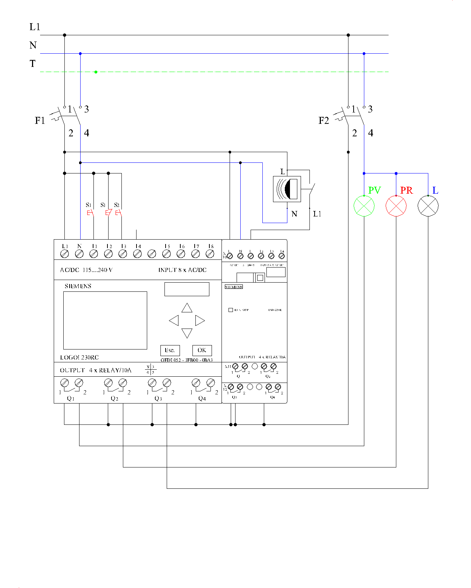

3.- Control de iluminación con detector de movimiento controlada mediante relé programable (LOGO)
1. Asignación de señales en el relé programable.
- I1: Pulsador marcha (S1) — contacto NO.
- I2: Pulsador paro (S1) — contacto NC.
- I3: Pulsador S2 — contacto NO.
- I9: Detector de movimiento (DM) — entrada I1 del módulo de ampliación DM8 230R.
- Q1: Piloto verde (PV).
- Q2: Piloto rojo (PR).
- Q3: Lámpara (L1).
Entradas digitales
Salidas digitales
2. Programa en FUP (LOGO!Soft Comfort)
| Bloque / Segmento | Lógica | Función |
|---|---|---|
| B001 RS | S = I1 | R = NOT I2 | Circuito activado → Q1; NOT B001 → Q2 |
| B002 Retardo a la conexión | Trg = I3, T = 5 s | Detecta pulsación larga de S2 |
| B003 RS | S = B002 | R = flanco ascendente de I3 | Memoriza que la pulsación fue larga |
| B004 Relé de impulsos | Trg = flanco descendente de I3 AND NOT B003 | R = NOT B001 | Pulsación corta: luz permanente ON/OFF |
| B005 Retardo a la desconexión | Trg = B002, T = 1 min (R = NOT B001) | Encendido temporizado de 1 minuto |
| B006 AND / OR | Q3 = B001 AND (I9 OR B004 OR B005) | Salida de la lámpara |
Los flancos se obtienen con los bloques «Flanco ascendente/descendente» (o con un AND con evaluación de flanco).
3. Esquema
Esquema multifilar de la práctica 3.

×